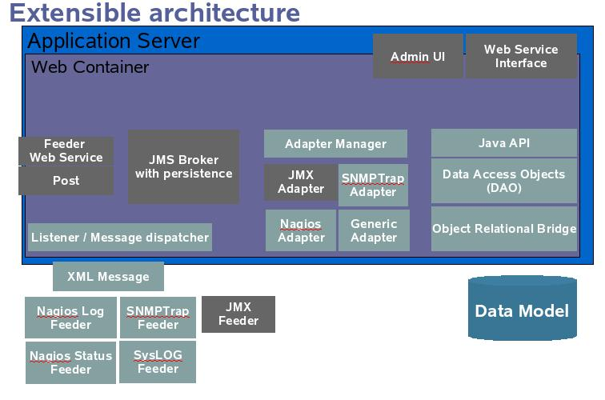

Welcome to the GroundWork Foundation Developer Toolkit. This toolkit provides application developers access to the underlying data in the GroundWork Foundation package.
Using the toolkit, programmers can use PHP, Perl, Java or third party products to:
- Build custom displays of real-time monitoring information.
- Build custom reports from historical monitoring information.
- Monitor additional devices or systems by feeding monitoring information into the system.
- Consolidate information from disparate systems into a single view.
- Integrate heterogeneous systems by using GroundWork Foundation as an intermediary system.
The Developer Tookit includes documentation that describes the available APIs and sample applications.
The toolkit is based on a framework developed by GroundWork Open Source Solutions, called GroundWork Foundation. The intent of GroundWork Foundation is to provide
a data model that integrates the components of an IT infrastructure that requires monitoring. Flexible methods of integrating data into the data store
are provided, allowing different tools, applications and databases to feed data into GroundWork Foundation. GroundWork Foundation will normalize the data so it can be retrieved in a consistent
manner. GroundWork Foundation then provides various APIs to allow the normalized data to be retrieved. The GroundWork Foundation package includes Nagios, as the main monitoring
system, integrated with GroundWork Foundation and a set of applications which use the GroundWork Foundation APIs to present real-time views and reports. An architectural diagram of the
GroundWork Foundation package is shown below.

Since the Nagios monitoring system is integrated in this package, any information gathered by any Nagios plugin can be integrated into the system. A Nagios feeder
takes the information from the Nagios system and inserts it into the GroundWork Foundation database.
The data objects contained in GroundWork Foundation maps closely to the Nagios objects.
This includes:
| Host Groups |
This includes Hosts as members. |
| Hosts |
This typically represents physical devices, and includes Services. |
| Service |
This typically represents a Nagios plugin executing on a specific host. A Host-Service combination is unique in the monitoring system. |
The following type of information can be retrieved:
| Host Status |
This represents the current status and attributes of Host objects. |
| Service Status |
This represents the current status and attributes of Service objects. |
| Events |
These are typically time stamped messages that are generated by a monitoring system or managed device. |
| Host Alerts |
Generated when a host changes state. |
| Host Notifications |
Generated when a notification occurs based on a Host Alert event. |
| Service Alerts |
Generated when a service changes state. |
| Service Notifications |
Generated when a notification occurs based on a Service Alert event. |
APIs built on top of the GroundWork Foundation framework allows this information to be retrieved. The APIs allow programs to query by object and data
type. Separate APIs are available for PHP, Perl and Java programs. In addition to the provided samples, the GroundWork Foundation status views (Network View,
Trouble View and Event View) are built using the PHP API.
In the GroundWork Foundation package, the various web applications are delivered under the Jetspeed open source framework. Jetspeed allows different applications to be packaged and delivered in a unified view and with a consistent look and
feel. A central login and security mechanism is used. The individual applications are referred to as portlets, and can be customized by an administrator
or the end user. The samples provided are shown as portlets, but standard web applications, such as CGI or JSP, can use the GroundWork Foundation APIs. Jasper Reports
is an open source report generator used by Java application developers that allows easy creation of custom reports. A Jasper Reports sample is also
included.
The Monarch tool is a web application that is used to configure the Nagios system. It stores the Nagios configuration data in its own
database. At this point in time, the Monarch database is a separate database then the GroundWork Foundation database, but GroundWork intends to integrate the two in a
future release.
|
GroundWork Foundation's data store has a flexible data format that can be expanded if needed. The GroundWork Foundation data types and attributes implemented in
the GroundWork Foundation package that are applicable to a Nagios-centric are listed below.
Host Status Attributes
- MonitorStatus
- LastCheckTime
- LastStateChange
- isAcknowledged
- TimeUp
- TimeDown
- TimeUnreachable
- LastNotificationTime
- CurrentNotificationNumber
- isNotificationsEnabled
- isEventHandlersEnabled
- isChecksEnabled
- isFlapDetectionEnabled
- isHostIsFlapping
- PercentStateChange
- ScheduledDowntimeDepth
- isFailurePredictionEnabled
- isProcessPerformanceData
- LastPluginOutput
Service Status Attributes
- Host
- MonitorStatus
- RetryNumber
- StateType
- LastCheckTime
- NextCheckTime
- CheckType
- isChecksEnabled
- isAcceptPassiveChecks
- isEventHandlersEnabled
- LastStateChange
- isProblemAcknowledged
- LastHardState
- TimeOK
- TimeUnknown
- TimeWarning
- TimeCritical
- LastNotificationTime
- CurrentNotificationNumber
- isNotificationsEnabled
- Latency
- ExecutionTime
- isFlapDetectionEnabled
- isServiceFlapping
- PercentStateChange
- ScheduledDowntimeDepth
- isProcessPerformanceData
- isObsessOverService
Event - Host or Service Alert
- Host
- ServiceDescription
- Severity
- HostStatus
- ServiceStatus
- TextMessage
- ReportDate
- LastInsertDate
- FirstInsertDate
- SubComponent
- ErrorType
Event - Host or Service Notification
- Host
- ServiceDescription
- Severity
- HostStatus
- ServiceStatus
- TextMessage
- ReportDate
- LastInsertDate
- FirstInsertDate
- SubComponent
- ErrorType
- LoggerName
Host Groups
Device
- DisplayName
- Description
- Identification
Monitoring Server
- MonitorServerName
- IP
- Description
|
|